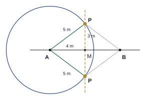

1. රටාව: 12, 22, 32, 42, … ; Tn = n2 ; T12 = 122
අවසාන පිළිතුර: සාධාරණ පදය n2 ; 12 වන පදය = 144
(ලකුණු 2)2. ඉලක්කම් හතරේ විශාලතම ද්විමය සංඛ්යාව = 11112 ; 1×8 + 1×4 + 1×2 + 1×1
අවසාන පිළිතුර: 11112 = 15 (දහයේ පාදයේ)
(ලකුණු 2)3. 14 × 23 = 16 ; 56 – 16 = 46
අවසාන පිළිතුර: 23
(ලකුණු 2)4. අඩුවීම = 800 – 680 = රු. 120 ; 120800 × 100
අවසාන පිළිතුර: 15%
(ලකුණු 2)5. ගුණිතය –15 ද ඓක්යය –2 ද වන සංඛ්යා දෙක: –5 හා +3 ; a2 – 5a + 3a – 15 = a(a – 5) + 3(a – 5)
අවසාන පිළිතුර: (a – 5)(a + 3)
(ලකුණු 2)6. 18 = 123
අවසාන පිළිතුර: 2−3
(ලකුණු 2)7. 6.05 × 10−3 : දශම ලක්ෂ්යය වමට ස්ථාන 3 කින් ගෙන යන්න
අවසාන පිළිතුර: 0.00605
(ලකුණු 2)8. 0.5x = 8 – 3 = 5 ; x = 5 ÷ 0.5
අවසාන පිළිතුර: x = 10
(ලකුණු 2)9. 2a = 14 හි දෙපස 2 න් (ශූන්ය නොවන සංඛ්යාවකින්) බෙදා ඇත
අවසාන පිළිතුර: සමාන දෑ ශූන්ය නොවන එකම සංඛ්යාවකින් බෙදූ විට ලැබෙන ප්රතිඵල සමාන වේ.
(ලකුණු 2)10. සරල රේඛාවක් මත කෝණවල ඓක්යය: 2x + 3x + 4x = 180° ; 9x = 180°
අවසාන පිළිතුර: x = 20
(ලකුණු 2)11. පරිමිතිය = 2r + 14 × 2πr = 28 + 14 × 2 × 227 × 14 = 28 + 22
අවසාන පිළිතුර: 50 cm
(ලකුණු 2)12. b2 = 132 – 122 = 169 – 144 = 25 (පයිතගරස්)
අවසාන පිළිතුර: 5 cm
(ලකුණු 2)13. x3 ≥ 2 + 1 = 3 ; x ≥ 9
අවසාන පිළිතුර: x ≥ 9
(ලකුණු 2)14. අවයව 3න් 2ක් තෝරන්න
අවසාන පිළිතුර: {a, b}, {a, c}, {b, c}
(ලකුණු 2)15. බාහිර කෝණය = 180° – 160° = 20° ; n = 360° ÷ 20°
අවසාන පිළිතුර: පාද 18 යි
(ලකුණු 2)| (i) | |
| කේන්ද්රය A ද අරය 5 m ද වූ වෘත්තය | 2 |
| (ii) | |
| AB හි ලම්බ සමච්ඡේදකය (AB හි මධ්ය ලක්ෂ්යය හරහා AB ට ලම්බව ඇදි සරල රේඛාව) | 2 |
| (iii) | |
| සටහන: AB රේඛාව, කේන්ද්රය A ද අරය 5 m ද වූ වෘත්තය හා AB හි ලම්බ සමච්ඡේදකය (A සිට 4 m) ඇඳ ඇත | 1 |
| වෘත්තය ලම්බ සමච්ඡේදකය හමුවන ලක්ෂ්ය දෙක (AB හි දෙපස එක බැගින්) P ලෙස ලකුණු කර ඇත; ඒවා AB රේඛාවේ සිට 3 m බැගින් වේ | 1 |
 | |
| (iv) | |
| M යනු AB හි මධ්ය ලක්ෂ්යය නම් AM = 4 m ; සෘජුකෝණී ත්රිකෝණය AMP හි: AP2 = AM2 + PM2 ⇒ 25 = 16 + PM2 | 1 |
| PM2 = 9 ⇒ PM = 3 m (P සිට AB ට ඇති දුර) | 1 |
| (v) | |
| වර්ගඵලය = 12 × AB × PM = 12 × 8 × 3 | 1 |
| = 12 m2 | 1 |
මුළු ලකුණු: 10
| (i) | |
| පරිමාව = 40 × 25 × 30 | 1 |
| = 30 000 cm3 | 1 |
| (ii) | |
| ලීටර් 1 = 1000 cm3 ; 30 000 ÷ 1000 | 1 |
| = ලීටර් 30 | 1 |
| (iii) | |
| ලීටර් 30 = මිලිලීටර් 30 000 ; 30 000 ÷ 250 | 1 |
| = කෝප්ප 120 | 1 |
| (iv) | |
| වියදම = 30 × 120 | 1 |
| = රු. 3 600 | 1 |
| (v) | |
| ආදායම = 120 × 40 = රු. 4 800 ; ලාභය = 4 800 – 3 600 = රු. 1 200 | 1 |
| ලාභ ප්රතිශතය = 12003600 × 100 = 3313% (≈ 33.3%) | 1 |
මුළු ලකුණු: 10
| (a) | |
| වැඩි වීමට පෙර වැටුප = 100% ; පසු = 112% | 1 |
| 112% = 56 000 ⇒ 100% = 56000112 × 100 | 1 |
| = රු. 50 000 | 1 |
| (b) | |
| විකුණුම් මිල = ගැනුම් මිලෙන් 115% | 1 |
| 115% = 1380 ⇒ 100% = 1380115 × 100 | 1 |
| = රු. 1 200 | 1 |
| (c) | |
| ගැහැනු ළමුන් = 100% – 40% = 60% | 1 |
| 60% = 360 ⇒ මුළු සිසුන් = 36060 × 100 | 1 |
| මුළු සිසුන් ගණන = 600 | 1 |
| පිරිමි ළමුන් = 600 න් 40% = 240 (හෝ 600 – 360) | 1 |
මුළු ලකුණු: 10
| (a) | |
| (i) 25 – x2 = 52 – x2 | 1 |
| = (5 – x)(5 + x) | 1 |
| (ii) 3x2 – 12x = 3x(x – 4) | 1 |
| (iii) x2 + 10x + 25 = x2 + 2(x)(5) + 52 | 1 |
| = (x + 5)2 | 1 |
| (b) | |
| පොදු හරය 6: 2(2x + 1) – (x – 2)6 | 1 |
| = 4x + 2 – x + 26 | 1 |
| = 3x + 46 | 1 |
| (c) | |
| x2 – y2 = (x + y)(x – y) | 1 |
| = 7 × 3 = 21 | 1 |
මුළු ලකුණු: 10
| (i) | |
| සුදුසු පරිමාණයක් හා නම් කළ අක්ෂ (x: කාලය පැයවලින්, y: දිග cm වලින්) | 1 |
| ලක්ෂ්ය (0, 20), (1, 17), (2, 14), (3, 11), (4, 8) සියල්ල නිවැරදිව ලකුණු කිරීම | 1 |
| ලක්ෂ්ය හරහා ඇදි සරල රේඛාව (අවරෝහී, (0, 20) සිට ආරම්භ වේ) | 1 |
| (ii) | |
| අනුක්රමණය = 17 – 201 – 0 = –3 (හෝ 8 – 204 = –3) | 1 |
| අර්ථය: ඉටිපන්දමේ දිග පැයකට 3 cm බැගින් අඩු වේ (දැවී යයි) | 1 |
| (iii) | |
| m = –3, අන්තඃඛණ්ඩය c = 20 (x = 0 විට y හි අගය) | 1 |
| y = –3x + 20 | 1 |
| (iv) | |
| x = 2.5 : y = –3(2.5) + 20 = 12.5 cm (ප්රස්තාරයෙන් කියවීම පිළිගන්න: 12.5 cm) | 1 |
| (v) | |
| දැවී අවසන් වන්නේ y = 0 විටය : 0 = –3x + 20 | 1 |
| x = 203 = 623 පැය (පැය 6 යි මිනිත්තු 40) | 1 |
මුළු ලකුණු: 10
| (a) | |
| ත්රිකෝණයක කෝණවල ඓක්යය: (x + 10) + (2x – 20) + (x + 30) = 180 | 1 |
| 4x + 20 = 180 ⇒ x = 40 | 1 |
| කෝණ: 50°, 60°, 70° (ඓක්යය 180°) | 1 |
| (b) | |
| සීනි 1 kg රු. s ද පරිප්පු 1 kg රු. d ද ලෙස: 3s + 2d = 1440 ……①, 2s + 3d = 1610 ……② | 1 |
| ①×3 : 9s + 6d = 4320 ; ②×2 : 4s + 6d = 3220 | 1 |
| අඩු කිරීමෙන්: 5s = 1100 | 1 |
| s = 220 (සීනි 1 kg රු. 220) | 1 |
| ①ට ආදේශයෙන්: 660 + 2d = 1440 ⇒ d = 390 (පරිප්පු 1 kg රු. 390) ; ② හි පරීක්ෂාව: 440 + 1170 = 1610 ✓ | 1 |
| (c) | |
| P = 2l + 2b ⇒ 2b = P – 2l ⇒ b = P – 2l2 (හෝ b = P2 – l) | 1 |
| b = 50 – 302 = 10 | 1 |
මුළු ලකුණු: 10
| (a) | |
| AB̂C = AD̂E = 55° (අනුරූප කෝණ, DE ∥ BC) | 1 |
| AĈB = AÊD = 65° (අනුරූප කෝණ, DE ∥ BC) | 1 |
| BÂC = 180° – (55° + 65°) (ABC ත්රිකෝණයේ කෝණවල ඓක්යය) | 1 |
| BÂC = 60° | 1 |
| (b) | |
| අභ්යන්තර කෝණවල ඓක්යය = (6 – 2) × 180° = 720° | 1 |
| සවිධි ෂඩස්රයක එක් කෝණයක් = 720° ÷ 6 = 120° | 1 |
| (c) | |
| බාහිර කෝණවල ඓක්යය = 360° : x + 2x + 3x + 4x = 360° | 1 |
| 10x = 360° ⇒ x = 36° | 1 |
| විශාලතම අභ්යන්තර කෝණය අයිති කුඩාම බාහිර කෝණයටය (x = 36°) | 1 |
| විශාලතම අභ්යන්තර කෝණය = 180° – 36° = 144° | 1 |
මුළු ලකුණු: 10
| (a)(i) | |
| සෘජු කොටස් දෙක = 2 × 100 = 200 m | 1 |
| අර්ධ වෘත්ත දෙක = විෂ්කම්භය 70 m වූ එක් වෘත්තයක් : πd = 227 × 70 = 220 m | 1 |
| පරිමිතිය = 200 + 220 = 420 m | 1 |
| (a)(ii) | |
| සෘජුකෝණාස්රය = 100 × 70 = 7 000 m2 | 1 |
| වෘත්තය (අරය 35 m) = 227 × 35 × 35 = 3 850 m2 | 1 |
| වර්ගඵලය = 7 000 + 3 850 = 10 850 m2 | 1 |
| (b) | |
| (i) වර්ගඵලය = පාදය × උස ⇒ 96 = 12 × h | 1 |
| h = 96 ÷ 12 = 8 cm | 1 |
| (ii) 96 = BC × h′ = 10 × h′ | 1 |
| h′ = 96 ÷ 10 = 9.6 cm | 1 |
මුළු ලකුණු: 10
| (i) | |
| 14 + 10 + 10 + 6 = සිසුන් 40 දෙනෙක් | 1 |
| (ii) | |
| අඹ (උසම තීරුව, 14) | 1 |
| (iii) | |
| කෙසෙල් = සිසුන් 10 : 1040 × 100 | 1 |
| = 25% | 1 |
| (iv) | |
| අඹ = සිසුන් 14 | 1 |
| කේන්ද්ර කෝණය = 1440 × 360° | 1 |
| = 126° | 1 |
| (v) | |
| පැපොල් = 10 ; සම්භාවිතාව = 1040 | 1 |
| = 14 | 1 |
| (vi) | |
| 14 – 6 = සිසුන් 8 දෙනෙක් | 1 |
මුළු ලකුණු: 10